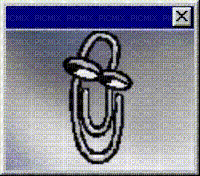

Cloud network engineer with 3+ years designing and operating multi-region Azure networks for KAF Digital Bank, a BNM RMiT-regulated Islamic digital bank — from intern to team lead.
C:\WINDOWS>explorer C:\Faris_
Faris Setup Wizard
Welcome to Faris. This wizard tells you who Faris is and what Faris does. It only takes a minute.
I came into cloud from networking. I studied Computer Networks & Security, got my CCNA, and I still debug most problems by asking where the packet actually went.
For 3+ years I've designed and operated multi-region Azure network infrastructure for a BNM RMiT-regulated Islamic digital bank. I authored the network security architecture behind the bank's licensing review, designed its Azure Virtual WAN estate connecting core banking and national payment rails, and grew from intern to team lead along the way.
I enjoy leading the team, but the part of the job I like most is the network itself. So the next role I'm looking for is a senior network engineering one.
Seven hops from first internship to lead cloud engineer.
MS-DOS Prompt - TRACERT_□×
C:\WINDOWS>tracert faris.career
7 hops, present → origin (Dec 2017)
Microsoft Word - Career.doc_□×
FileEditViewInsertFormatToolsTableWindowHelp_□×
100%▼
Normal▼Times New Roman▼12▼BIU
L
01. kaf-digital-bank.internal
Mar 2025 – present
▼ Assistant Manager, Lead Cloud Engineer
Led the bank's Operational Readiness Review with Bank Negara Malaysia, authoring the network security architecture submission that satisfied 2 RMiT domains and helped secure the Islamic Digital Bank license.
Designed and led migration to an Azure Virtual WAN hub-and-spoke architecture with Routing Intent and centralised Azure Firewall Policy, connecting core banking, national payment systems and hybrid partner endpoints — observed through VNet Flow Logs and Traffic Analytics.
Segmented remote access per department with vWAN Point-to-Site user groups and firewall-enforced policy. Integrated SD-WAN NVAs into the hub and centralised name resolution on Private DNS Resolver.
Authored the platform hardening ADR — Management Group hierarchy, CIS/RMiT controls enforced through Azure Policy (DINE/AINE) and Machine Configuration — and built a CIS-hardened golden image with Azure Image Builder and Compute Gallery.
Leading a storage modernisation onto Azure Blob Storage, replacing an early lift-and-shift design and simplifying the platform's identity footprint.
Built a 3-person cloud operations team on a ticket-first, CAB-aligned operating model; within 6 months the team was working the queue on its own without me in every ticket.
Lead disaster recovery with third-party vendors for core banking and payments: regular live failover drills and an annual landing-zone DR exercise hitting a 1-hour RTO against BNM's 2-hour mandate, backed by immutable backups.
you are here — trace continues to origin
02. kaf-digital-bank.internal
Mar 2024 – Mar 2025
► Executive, IT Systems Engineer
Strengthened privileged access ahead of go-live by implementing Azure PIM, Azure RBAC and SSO (SAML/OIDC) for 150+ privileged and non-privileged identities across SaaS and IaaS applications.
Replaced self-managed Active Directory domain controllers on Azure VMs with Entra Domain Services, keeping LDAP working for legacy workloads.
Designed and deployed the bank's first Azure landing zone connectivity stack — VPN Gateway, Azure Firewall, SD-WAN NVA, Application Gateway, API Management, VNets and routing — connecting core banking SaaS, national payment systems and partner networks. It later evolved into the Virtual WAN architecture.
03. kaf-digital-bank.internal
Aug 2023 – Feb 2024
► IT Systems Engineer Intern
Designed and deployed a Managed File Transfer platform for 150+ users on Azure VMs, Load Balancer and Azure Blob, for secure, compliant file exchange with strategic partners.
Built proofs of concept with the Cloud Engineer for VNets, VPN Gateway, Private DNS Zones, Application Gateway and API Management ahead of the bank's landing zone build.
Helped establish Azure Backup and Recovery Services Vaults for IaaS workloads — the backup foundation later used for DR and RMiT retention.
Supported the Faculty of Computing: grading, review sessions, office hours, course material development, and exam proctoring.
05. utm.razak-faculty
5 mos · 2020–21
► Research Assistant Intern
Supported M-learning research at the Faculty of Technology Informatics Razak — literature review, data collection and analysis, contributing to publication outputs.
06. utm.edu.my
10 mos · 2019–20
► Academic Tutor
President of Academic Tutorship, 2019/2020. Organized tutoring sessions and taught C++ and Assembly Language to fellow students.
07. amk-holidays.internal
4 mos · 2017–18
► Graphic Design Intern
Designed flyers and Instagram posters for hotel promotions and pricing.

▲▼
Page 1
Sec 1
1/7
At 2.4"
REC TRK EXT OVR
03. The Buildout
Platform growth and the homelab, cable by cable.
Microsoft Excel - Buildout.xls_□×
FileEditViewInsertFormatToolsDataWindowHelp_□×
Arial▼10▼BIU
B6▼=1
A
B
C
D
1
Metric
Value
Unit
Notes
2
Identities under PIM, RBAC & SSO
150+
identities
Privileged and non-privileged, across SaaS and IaaS
3
Years on the same platform
3
years
Intern to team lead
4
Cloud ops team built from zero
3
people
Ticket-first, CAB-aligned operating model
5
RMiT domains satisfied
2
domains
Islamic Digital Bank licence
6
Failover RTO, proven
1
hours
Regular live drills, immutable backups
7
BNM RTO limit
2
hours
The mandate
8
Headroom
1
hours
=B7-B6
9
10
11
12
13
14
15
16
17
18
19
20
21
22
23
24
25
26
◀|◀▶|▶ImpactSheet2Sheet3◀▶
Ready
NUM
MS-DOS Prompt - AZ_□×
C:\WINDOWS>az network show --as-of
the same platform, rebuilt three times
Microsoft PowerPoint - Platform.ppt_□×
FileEditViewInsertFormatToolsSlide ShowWindowHelp
Arial▼28▼BIU
AUG 2023 – FEB 2024
Foundation
IT Systems Engineer Intern
Designed and deployed a Managed File Transfer platform for 150+ users — Azure VMs behind a Load Balancer, backed by Azure Blob — for secure, compliant file exchange with the bank's partners.
Built proofs of concept with the Cloud Engineer for VNets, VPN Gateway, Private DNS Zones, Application Gateway and API Management ahead of the landing zone build, and helped establish the Azure Backup and Recovery Services Vaults that later carried DR and RMiT retention.
1
MAR 2024 – MAR 2025
Hardening
Executive, IT Systems Engineer
Strengthened privileged access ahead of go-live — Azure PIM, RBAC and SSO (SAML/OIDC) for 150+ identities across SaaS and IaaS.
Designed the bank's first landing zone connectivity stack, linking core banking SaaS to national payment systems and partner networks, and replaced self-managed domain controllers with Entra Domain Services so legacy LDAP workloads kept working.
2
ONGOING
Continuous Improvement
Assistant Manager, Lead Cloud Engineer
Led the Operational Readiness Review with BNM — the network security architecture I authored satisfied 2 RMiT domains and helped secure the Islamic Digital Bank license.
Moved the estate onto Azure Virtual WAN with Routing Intent, segmented remote access per department with P2S user groups, codified hardening in an ADR enforced through Azure Policy, and I'm now moving storage onto Blob. DR is proven in regular live failover drills with a 1-hour RTO.
3
Slide 1 of 3
Default Design
MS-DOS Prompt - GIT_□×
C:\WINDOWS>git log --graph --all platform.git
three roles, four threads
MS-DOS Prompt_□×
│●7c3e9d1(network) storage moves onto Blob││●b40a5f8(resilience) DR drills, 1-hour RTO│●│e2d71c6 P2S access per department●─┤│9f2c1ab(HEAD ->main) licence: Islamic Digital Bank approved││●│5d9e8b3(identity) ADR enforced through Azure Policy│●││a1f5c07(tag: lead) Virtual WAN with Routing Intent││●│3b8d2e4 Entra Domain Services replaces DCs●─┼─┤│2c7a4f9 go-live: PIM, RBAC and SSO in place││●│61c2e0f PIM, RBAC and SSO for 150+ identities├─┼─┘││●│d83a9b5(tag: executive) first landing zone│●│0e5b7c2 proofs of concept: VNet, VPN, APIM├─┘││●f47d1a8 Recovery Services Vaults│●86c0e3d managed file transfer for 150+ users├─────┘●1a2b3c4(tag: intern) root: the bank has no landing zone yetC:\WINDOWS>_
MS-DOS Prompt - DIFF_□×
C:\WINDOWS>diff --stat skillset.log
same platform, widening scope
Featured Project×
Azure Landing Zone — Inter-SaaS Connectivity
Bicep · Azure
OK
Designed the landing zone connecting external SaaS platforms (core banking, payments) and hybrid partner endpoints. The initial stack — VPN Gateway, Azure Firewall, SD-WAN NVA, Application Gateway, API Management, and VNets/routing — is the foundation that later evolved into the bank's Virtual WAN architecture.
SaaS log retention: extended a SaaS application's 1-year in-app log retention to the 7 years BNM RMiT requires by pulling logs through the vendor API into bank-owned storage.
eKYC data sovereignty: moved eKYC identity verification records out of a SaaS provider into bank-owned storage to meet PDPA, retained 7 years under RMiT, with admin access gated through Azure PIM.
Certificate transparency monitor: hourly crt.sh polling for new certificates on the bank's domains, alerting on-call via Azure Monitor.
P1–P4 severity framework for Azure resources — IaaS VMs, API Management, Communication Services.
Routes Azure Monitor alerts to Jira Service Management Ops for on-call paging.
Staged expiry alerts for keys, certificates and licences, so renewals happen before anything breaks.
Modules: Azure Monitor, Jira Service Management Ops
04. Off the Clock
Side builds made for fun after hours.
Windows Help_□×
ContentsIndexSearch
Homelab GitOps Pipeline
Gitea · Terraform · Ansible · OpenBao
Every change to the lab is a pull request. A plan job runs Terraform, lints, and classes the change by risk: low-risk merges itself, medium-risk needs an agent reviewer, high-risk needs me. Each apply snapshots the guests first, then runs Terraform and Ansible and verifies the result layer by layer. Nightly jobs catch drift and pending patches, and every runner signs in to OpenBao with its own AppRole.
Related topics
Terraform
Ansible
Gitea
OpenBao
drift detection
AIOps Agent Team
OpenClaw · MCP · Python · Prometheus
A team of agents runs the lab through the same pipeline I do: a router that triages work, infra, config and network agents that can only open pull requests, a reviewer agent, and an SRE agent for incidents. They act through MCP servers for DevOps, Proxmox, SSH, UniFi and Prometheus. Anything marked protected (the host, CI, secrets, the agents themselves) is read-only to them. Prometheus and blackbox probes watch 37 targets.
Related topics
MCP
Python
OpenClaw
UniFi
Prometheus
Segmented Network & k3s
UniFi · Proxmox VE · k3s · AdGuard
A UDM Pro Max runs the zone firewall, WAN failover and per-network Proton VPN egress, and links through an inline Sophos firewall (an L2 transparent bridge, 2×10G LACP on both sides) to a USW Pro Max 24 doing L3 for the server zones. A USW Aggregation below the core carries 10G to the Proxmox host's 2×10G LACP guest trunk, the UNAS Pro and my workstation. Three UX7 access points hang off the core: one wired, one daisy-chained, one on mesh. Shared services runs an HA k3s cluster (three etcd servers behind a keepalived VIP, plus two workers), and Wi-Fi and IoT each get a pair of AdGuard resolvers.
Related topics
VLAN segmentation
10G SFP+
LACP
Proton VPN
k3s
AdGuard
MS-DOS Prompt - TYPE_□×
C:\WINDOWS>type homelab-topology.yaml
every cable: gateway → core → aggregation → host
WAN / VPN 10G 1G / 2.5G AP uplink mesh LAG / LACP gateway switch / zone access point
UDM Pro Max — zone firewall, WAN failoverSophos FW — L2 transparent bridge · 2×10G LACP both sidesUSW Pro Max 24 — L3 coreUSW Aggregation — 8× SFP+ 10G, L23× UX7 — wired, daisy-chained & meshProxmox VE 9.2 — 2× Xeon E5-2640 v4 · 39 GiB2×10G LACP guest trunk · 1G mgmt LAGUNAS Pro — 10G + 1GProton VPN SG / MY / JP · 3 WireGuard tunnels11 VLANs · 9 firewall zonesk3s HA — 3 servers + 2 workersTerraform + Ansible via GiteaOpenBao secrets · Prometheus, 37 targets
MS-DOS Prompt - TYPE_□×
C:\WINDOWS>type openclaw-team.yaml
how a request becomes a pull request
MS-DOS Prompt - TYPE_□×
C:\WINDOWS>type homelab-devops.yaml
how a pull request becomes a running lab
05. Education
Where the packets started.
MS-DOS Prompt - DIR_□×
C:\WINDOWS>dir education
2 file(s)
SEPT 2021 – FEB 2024
Bachelor of Computer Science
Computer Networks and Security · Universiti Teknologi Malaysia, Skudai
Graduated with a 3.81 CGPA. Final year projects: a comparative study of XGBoost vs. Random Forest for zero-day malware classification (shipped as a Chrome extension), and a Flutter/Firebase study planner for live timetable clash detection.
Dean's Award — 2021 & 2024 · URC 2023 participant
JUNE 2018 – FEB 2021
Diploma of Computer Science
Information Technology · Universiti Teknologi Malaysia, Kuala Lumpur
Graduated with a 3.83 CGPA, including a 4.00 GPA in four semesters. Joined community programmes such as PERSIS, then helped organise an anti-drug awareness programme and an Arduino workshop for young children. As academic tutorship president, taught C and assembly to struggling students.
4.00 GPA × 4 · PERSIS · Tutorship president
06. Certifications
Exams passed, receipts included.
Certifications Setup Wizard
Certifications
Setup found these credentials. Which ones would you like to see?